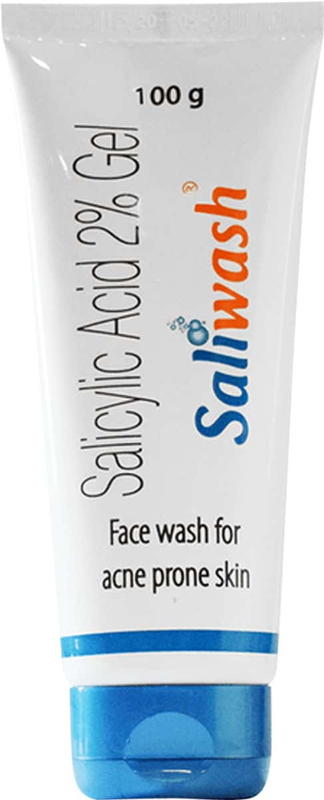
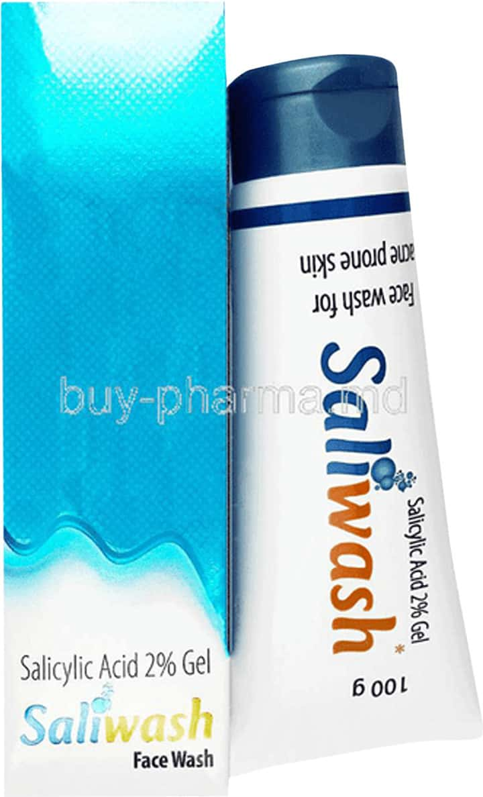
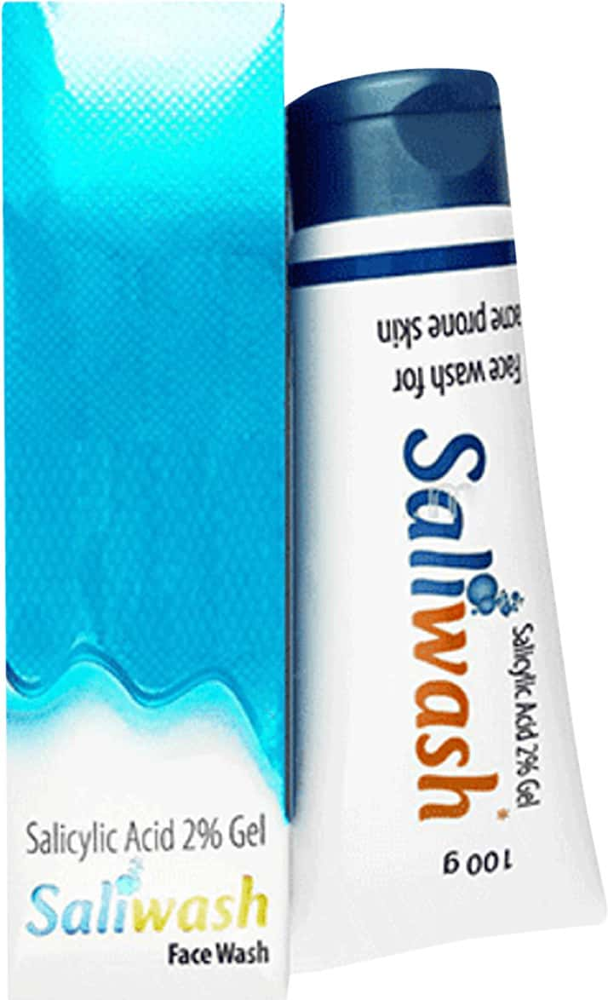
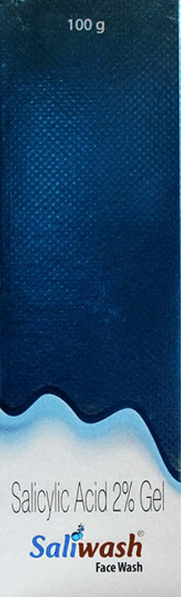

Salicylic Acid 2% Gel Face Wash
Salicylic Acid 2% Gel Face Wash is a face wash that helps to cleanse and exfoliate the skin. It is formulated with 2% salicylic acid, which is a beta-hydroxy acid (BHA) that helps to remove dead skin cells and unclog pores. This can help to improve the appearance of acne, blackheads, and whiteheads. The face wash also contains glycerin, which helps to hydrate the skin.
Benefits of Salicylic Acid 2% Gel Face Wash
- Helps to cleanse and exfoliate the skin
- Can help to improve the appearance of acne, blackheads, and whiteheads
- Contains glycerin, which helps to hydrate the skin
How to use Salicylic Acid 2% Gel Face Wash
- Wet your face with lukewarm water.
- Apply a small amount of the face wash to your hands and massage it into your skin.
- Rinse your face thoroughly with water.
- Use the face wash once or twice a day, as directed by your doctor or dermatologist.
Ingredients
- Salicylic acid 2%
- Glycerin
- Water
- Cocamidopropyl betaine
- Sodium lauryl sulfate
- Fragrance
Warnings
- For external use only.
- Avoid contact with eyes.
- If you experience any irritation, discontinue use and consult a doctor or dermatologist.
- Keep out of reach of children.
Image

Image

Image

Image

Image